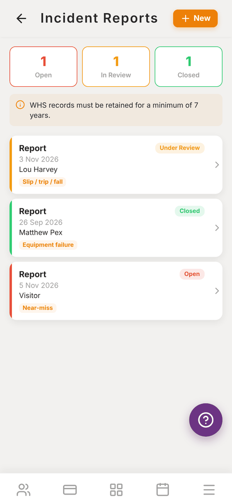
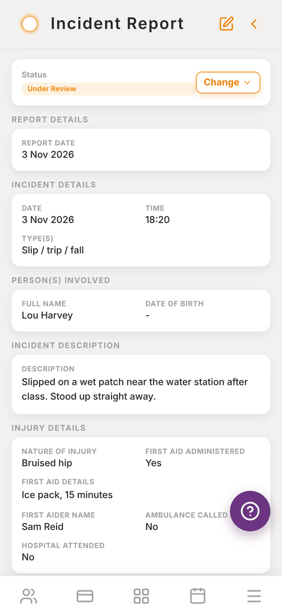
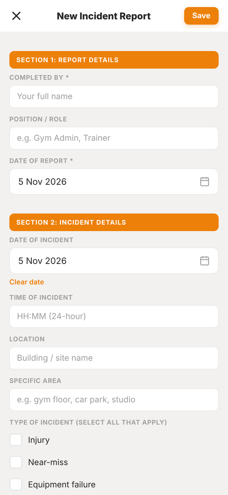

Totality for gym owners
Incident reports
Record injuries, near misses and other incidents in a full nine-section report, follow them up and close them out.
Incident reports gives you a digital incident form for your gym, so every slip, injury, near miss or equipment failure is written up properly and kept. Work health and safety records must be kept for at least 7 years, and the screen reminds you of that.
Open More, then Staff, then Incident reports. It is also in Settings, then Incident Reports.


The list#
The top shows how many reports are Open, In Review and Closed. Each report shows its date, the person involved, the type of incident and a status badge. Tap one to read it.
Reports that are Open or In Review also show on your dashboard as "2 incident reports not closed".
Write a report#
- Tap + New.
- Fill in the sections. Only the starred fields are required.
- Tap Save at the top.

The form follows the standard nine sections:
| Section | What you record |
|---|---|
| 1. Report Details | Completed by, position or role, date of report |
| 2. Incident Details | Date and time (24 hour), location, specific area, type of incident (tick all that apply: Injury, Near-miss, Equipment failure, Slip / trip / fall, Medical episode, Property damage, Aggressive behaviour, Environmental hazard, Other) |
| 3. Person(s) Involved | Name, date of birth, phone, email, relationship to the business (client, staff, visitor), membership or client ID, anyone else involved |
| 4. Incident Description | A detailed factual account: what happened, the sequence of events, conditions, contributing factors |
| 5. Injury Details | Nature of injury, body part, first aid given and by whom, whether an ambulance was called or hospital attended |
| 6. Witnesses | Up to two witnesses with contact details and a statement summary |
| 7. Immediate Actions Taken | What was done to make the area safe and help the person |
| 8. Follow-up Required | Tick all that apply: WorkSafe notification required, Equipment inspection needed, Risk assessment review, Policy / procedure update, Staff retraining, Insurance claim, Client follow-up call, Other |
| 9. Sign-off (Reviewer) | Reviewed by, reviewer comments |
Each report gets its own reference number automatically.
Follow up and close a report#
- Open the report.
- Next to Status, tap Change and pick Open, Under Review or Closed.
- To add the reviewer's sign-off or anything else, tap the edit icon, update the report and tap Save.
Delete a report#
Open it and tap Delete report at the bottom. This cannot be undone, so only delete reports made by mistake. Keep real reports for at least 7 years.
Questions#
Can my trainers file incident reports?
Incident reports are written in the gym owner or admin login. If a trainer sees an incident, have them tell you so you can write it up, and name them in Completed by.
Does Totality notify WorkSafe for me?
No. Tick WorkSafe notification required as a reminder, and notify your state regulator yourself if the incident is notifiable.
Can I print or export a report?
Not from the app at the moment. Take a screenshot of each section if you need a copy for an insurer.